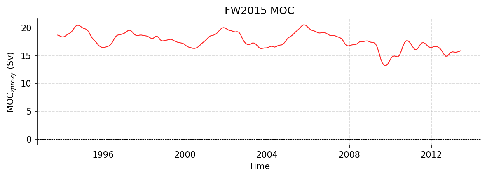

FW2015 Datasets
MOCproxy_for_figshare_v1.0.mat
Dataset Overview
Project: RAPID
Description: Estimating the Atlantic overturning at 26°N using satellite altimetry and cable measurements
Source File: MOCproxy_for_figshare_v1.0.mat
Data Product: a proxy for the meridional overturning circulation at 26N, using sea level anomaly and cable measurements
License: CC-BY-4.0
Time Coverage: 1993-01-15 to 2014-12-15
Record Length: 264 observations (21.9 years)
Sampling Frequency: monthly
Citation:
Frajka-Williams, E. (2015), Estimating the Atlantic overturning at 26°N using satellite altimetry and cable measurements. Geophys. Res. Lett., 42, 3458–3464. doi: http://doi.org/10.1002/2015GL063220.
Dataset Visualization
{kind=link}

Time series plot for FW2015 dataset.
Dataset Statistics
Total Variables: 11
Total Coordinates: 1
Dataset Size: 0.02 MB
Coordinate Information
The following table shows information about the dataset coordinates in the standardised version, including coordinate name remapping from the original, if any:
Coordinate |
Description |
Units |
Size |
Min Value |
Max Value |
Missing % |
|---|---|---|---|---|---|---|
time → TIME |
Time |
seconds since 1970-01-01T00:00:00Z |
(264,) |
1993-01-15 |
2014-12-15 |
0.0% |
Variable Information
The following table shows the mapping from original variable names to standardized names, along with key statistics for each variable.
Variable |
Description |
Units |
Size |
Min Value |
Max Value |
Missing % |
|---|---|---|---|---|---|---|
moc → MOC |
MOC_z: The meridional overturning circulation at 26N or, the volume of water moving northward in the top (roughly) 1100 m of the ocean which is equal-and-opposite-to the volume of water moving southward below this depth. |
sverdrup |
(264,) |
12.98 |
19.95 |
61.0% |
mocproxy → MOC_PROXY |
MOC_z proxy: a proxy for the meridional overturning circulation at 26N, using sea level anomaly and cable measurements |
sverdrup |
(264,) |
13.21 |
20.54 |
10.2% |
h1umo → SSHA |
SSHA near 28N, 70W: sea level anomaly from a spatially-smoothed and temporally filtered version of the AVISO mapped absolute dynamic topography product and selected near 28N, 70W in the Atlantic, at the point with the highest anticorrelation between the upper mid-ocean transport measured by the RAPID-MOCHA project and sea level anomaly |
cm |
(264,) |
-3.17 |
6.12 |
10.2% |
unadw → TRANS_1100_3000 |
Upper NADW: The upper North Atlantic Deep water transport or mid-ocean transport between the Bahamas and Africa and between the depth layers of 1100 m and 3000 m. |
sverdrup |
(264,) |
-12.89 |
-10.79 |
61.0% |
lnadw → TRANS_3000_5000 |
Lower NADW: The lower North Atlantic Deep water transport or mid-ocean transport between the Bahamas and Africa and between the depth layers of 3000 m and 5000 m. |
sverdrup |
(264,) |
-8.34 |
-3.21 |
61.0% |
ek → TRANS_EKMAN |
Ekman: Surface meridional (north-south) Ekman transport as estimated from ERA-Interim reanalysis winds. |
sverdrup |
(264,) |
1.64 |
5.11 |
6.1% |
ek_grid → TRANS_EKMAN_GRID |
Ekman: Surface meridional (north-south) Ekman transport as estimated from ERA-Interim reanalysis winds. |
sverdrup |
(264,) |
1.97 |
4.42 |
61.0% |
gs → TRANS_FC |
Florida Current: The strength of the Gulf Stream transport through the Florida Straits between Florida and Bahamas, as measured by a submarine telephone cable. |
sverdrup |
(264,) |
30.19 |
34.61 |
3.8% |
gs_grid → TRANS_FC_GRID |
Florida Current: The strength of the Gulf Stream transport through the Florida Straits between Florida and Bahamas, as measured by a submarine telephone cable. |
sverdrup |
(264,) |
30.61 |
32.13 |
61.0% |
umo → TRANS_UMO |
Upper mid-ocean: The strength of the upper mid-ocean transport between the Bahamas and Africa at 26N, in the top (roughly) 1100 m of the ocean. |
sverdrup |
(264,) |
-20.18 |
-15.31 |
61.0% |
umoproxy → TRANS_UMO_PROXY |
UMO proxy: a proxy for the upper mid-ocean transport based on the linear regression between recon.h1umo and mocgrid.umo |
sverdrup |
(264,) |
-19.51 |
-15.16 |
10.2% |
Metadata (edits applied noted)
The following metadata describes this dataset:
Summary: Estimating the Atlantic overturning at 26°N using satellite altimetry and cable measurements
Description*: Estimating the Atlantic overturning at 26°N using satellite altimetry and cable measurements
Project*: RAPID
License*: CC-BY-4.0
Weblink*: https://zenodo.org/records/18606051
Data Product*: a proxy for the meridional overturning circulation at 26N, using sea level anomaly and cable measurements
Time Coverage Start*: 1993-01-15
Time Coverage End*: 2014-12-15
Contributor Name*: Eleanor Frajka-Williams
Contributor Role*: originator
Contributor Role Vocabulary*: https://vocab.nerc.ac.uk/collection/G04/current/
Contributor Email:
Contributor Id: https://orcid.org/0000-0001-8773-7838
Contributing Institutions*: University of Southampton
Contributing Institutions Vocabulary:
Contributing Institutions Role:
Conventions*: CF-1.8, ACDD-1.3, OceanSITES-1.5
featureType*: timeSeries
featureType_vocabulary: https://cfconventions.org/cf-conventions/v1.6.0/cf-conventions.html#_features_and_feature_types
Source File*: MOCproxy_for_figshare_v1.0.mat
Source Path*: ~/.amocatlas_data/MOCproxy_for_figshare_v1.0.mat
Source Url*: https://zenodo.org/records/18606051/files/MOCproxy_for_figshare_v1.0.mat
Date Modified: 2026-08-01T00:00:00Z
Processing Software: http://github.com/AMOCcommunity/amocatlas
Processing Version: v0.4.0
Processing Datasource*: fw2015
Applied Variable Mapping: [Complex metadata structure - 14 items]
Created: Jun 2015, Eleanor Frajka-Williams
Version: v1.0